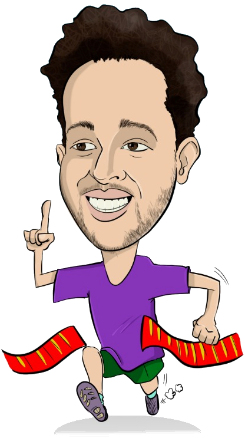

Quem eu Sou

Olá seja bem vindo a minha página web, nesta área vou falar um pouco sobre mim.
Sou Cristão, pai de família, casado com Andreza que desta união nasceu meu querido filho. Gosto de futebol e meu time do coração é o Galoo, gosto de um bom filme e de uma série de sucesso, me considero um cinéfilo e um grande fã de uma produção cinematográfica. Gosto de esportes, sou praticante de corrida e de trilha, tendo alcançado minhas melhores marcas com 18km de caminhada e 6km de corrida. Prefiro o descanso de um sítio do que uma festa agitada, o som dos pássaros, cachoeira, um cafezinho.. Sou adepto ao simples e ao que é necessário para viver bem sem luxos.
Um pouco da minha trajetória profissional..
Tive meu primeiro emprego como aprendiz administrativo na empresa Localiza, trabalhava no processo de faturamento de NF para o setor, mas sempre ajudava meus colegas com dúvidas em algum equipamento de escritório (impressora, scanner, mouse, teclado entre outros) acho que por ser novo e ter nascido na geração Y (a geração da internet) me consideravam uma referência para isso. Sempre gostei da área de tecnologia e tinha uma certa facilidade para aprender a mexer em algum equipamento novo, então defini que queria trabalhar nesta área. Como hoje tudo resolvemos na internet acredito que quem não se atualizou com as exigências do mundo digital, está passando ou passou por alguma dificuldade para se adequar. E o futuro é isso o conceito de internet 4.0 fala sobre isso sobre equipamentos mais complexos com inteligência artificial para tomada de decisão e alta conectividade, produtos conectados entre si para facilitar o dia a dia das pessoas, ou para aumentar a produção de uma empresa.
Após esta experiência profissional comecei trabalhando com criação de peças gráficas, e desenvolvimento de pequenos trabalhos digitais. Participei do desenvolvimento de um jogo 2D como trabalho de conclusão do curso de Jogos Digitais, ganhado como o Destaque em Game Design em reconhecimento ao bom desempenho e comprometimento com as atividades. Me encontrei na área criativa e no desenvolvimento web, fiz alguns cursos na área para me inserir melhor abrindo meus horizontes, e tracei minha rota como um típico profissional de T.I que pesquisa e acompanha as variadas tecnologias que surgem no mercado. Me moldei como um profissional curioso, criativo e que sempre quer aprender mais.
A medida que eu fui adquirindo conhecimento veio surgindo novas oportunidades, tive uma experiência curta, mas bem útil de trabalhar como cinegrafista em uma produtora de audiovisual com meu irmão, lá aprendi todo processo de produção e pós-produção de um vídeo. Isso me trouxe a sensibilidade a compreender a satisfação do cliente com a entrega do produto, qual a aceitação do cliente. Fui estudar um pouco mais sobre este conceito a forma como nos comportamos com a interação do humano-computador vi que estudiosos criaram um termo sobre a "Experiência do usuário" que é conjunto de elementos e fatores relativos à interação do usuário com um determinado produto, sistema ou serviço, cujo resultado gera uma percepção positiva, ou negativa aos afetos psicologicos da pessoa.
Trabalhava em casa já algum tempo com pequenas manutenções de hardware e software, e criava logos e banners que algumas pessoas pediam para fazer. Já tinha um conceito bem solido de redes de computador com gerenciamento por domínio ou grupo de trabalho. Surgiu a oportunidade de trabalhar com Helpdesk em uma empresa de software aqui de Belo Horizonte, esta empresa foi minha escola aprendi a lidar com o cliente e usar das ferramentas do micro para solução do problema. Trabalhar com suporte técnico é trabalhar com problemas, saber lidar com eles e criar a melhor solução para resolver o problema, emissor de solução diante da necessidade de variados problemas. Ganhei destaque e reconhecimento na empresa chegando a ser o braço direito do gerente do setor, assumi novas funções como gerenciamento da rede interna com Windows Server, e já prestava suporte ao usuário da empresa a dúvidas relacionadas a informática. Fui oficializar essa prática com um curso superior, hoje sou formado no Curso de Gestão da Tecnologia da informação, passei por variados processos de desenvolvimento de software, gerenciamento de ti de uma empresa, conceitos de boas práticas em TI como ITIL, Cobit e ISO 2000, ferramentas de gerenciamento em nuvem e virtualização de maquinas, manipular um micro com distribuição Linux, entre várias outras ferramentas da área de tecnologia da informação fazem parte do meu dia a dia como profissional e entusiasta.
Hoje com 8 anos de mercado sou um profissional com bagagem para gerir a infraestrutura de T.I de uma empresa com qualidade e segurança nos processos.
Tenho bagagem para agregar a área de desenvolvimento web também, com as ferramentas e softwares certos atrelados aos conceitos de Web Design, Marketing, Publicidade Digital e Comunicação Visual acompanhado de html, css, um pouco de javascript e banco de dados.
“O importante é ter constância.”